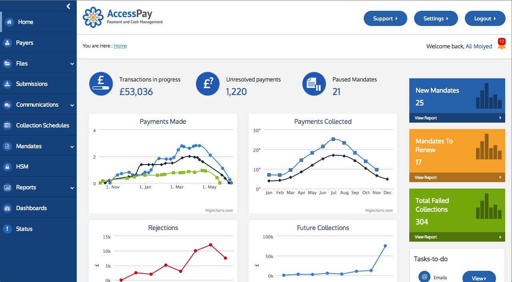

Access Pay demo website
Freelance contract with Access Pay. Creating a demo of their product's web interface with HTML, CSS and JavaScript. Tools I used included the Foundation layout framework, Font Awesome, High Charts, and Power Tip.


Primary Skills
Further skills
Freelance contract with Access Pay. Creating a demo of their product's web interface with HTML, CSS and JavaScript. Tools I used included the Foundation layout framework, Font Awesome, High Charts, and Power Tip.
I worked a 5 week contract with U-dox creative ltd. Finishing/bug-fixing an e-commerce website for the record label: Defected.com. Using Django web framework, Oscar e-commerce framework, and Bootstrap layout framework. Coding in HTML, LESS, and JavaScript. Working with git version control, virtual environments, and Redmine project management.
I'm currently working with GiveMeTap to improve their website. This involves learning Ruby on Rails, the google maps API, and the shopify CMS, while also making use of git. So far I have edited the shopify template to accommodate a different navigation layout, including the find taps search dropdown, and improved the map user experience on the find taps page.
The website you see here! I took a photoshop template, adapted it for my purpose, and created a fully functioning, interactive, responsive, professional online portfolio with HTML5 CSS3 and JQuery
This is a UI for production-line coding&marking printers running on low-spec hardware. The UI had to be intuitive and common across several different printer technologies and two different screen sizes. It was developed using Qt, a C++ cross-platform application framework, and I was using its front end language: QML, with JavaScript to create the UI.
I developed the back-end from an old developmental version of Django and an outdated version of MySQL to the current releases. This also required working with python, dealing with a headache of Unicode problems, using SSH and git version control.
I also developed a new front-end with XHTML and CSS, designed to be responsive to the width of the window down to a minimum size. It was also tested across different browsers and operating systems. I used W3C's code validator to check my code against the standards.
You can compare with the look of their previous website using waybackmachine.
Designed and built from scratch. The website consists of 4 pages: home, category, gallery, & picture, and the content of those pages is retrieved from a MySQL database using PHP depending on the links the user clicks.
I built a website for the council using the Joomla CMS and customising a theme with CSS. I also designed their Logo.

Here is a suggestion to all potential clients out there, which you can take or leave, but it’s worth considering, as it will save you money.
I propose that I will do just as much work if I work 4 day weeks as if I work 5 day weeks. There are two main reasons for this.
Overall I’ll be happier, and will get more work done on the days I do work. The client gets to save money, paying for 4 days instead of 5, for the same result. It’s a win-win situation.
Just sayin’
Thanks to CSS3, we can now use our own custom fonts in websites, rather than have to worry about web-safe fonts, this opens up a world of possibilities. Here I will introduce one tool which has capitalised on this.
Font Awesome is essentially a font, but instead of the usual characters, we have useful icons and symbols.
Installation into your website couldn't be simpler, with this one line of code into the <head> of the page.
<link href="http://netdna.bootstrapcdn.com/font-awesome/4.0.3/css/font-awesome.css" rel="stylesheet">
They come with some pre-made classes to give you some nice effects:
<i class="fa fa-bug fa-2x fa-border"></i>
<i class="fa fa-spinner fa-2x fa-spin"></i>
<i class="fa fa-check fa-2x fa-rotate-180"></i>
<i class="fa fa-check fa-2x fa-flip-vertical"></i>
You can even stack two icons into each other.
<span class="fa-stack fa-lg">
<i class="fa fa-heart fa-stack-2x"></i>
<i class="fa fa-leaf fa-stack-1x" style="color:white"></i>
</span>
And then, of course, you can do anything with them that you can do with a normal font
Flexslider is a jQuery toolkit that makes placing sladeshows into your website a breeze. The instuctions are so simple I'm not going to bother giving a tutorial, I'm just going to show you the code and give an example of it working to show off some of my Artwork ;)
<head>
...
<link rel="stylesheet" href="FlexSlider/flexslider.css"">
<script src="FlexSlider/jquery.flexslider-min.js"></script>
<script type="text/javascript">
$(window).load(function() {
$('.flexslider').flexslider({
slideshowSpeed: 3000,
pauseOnAction: false,
});
});
</script>
...
</head>
<body>
...
<div class="flexslider">
<ul class="slides">
<li>
<img src="FlexSlider/demo-images/psychedelic.jpg" alt="Psychedelic"/>
<p>Psychedelic</p>
</li>
<li>
<img src="FlexSlider/demo-images/lucky.jpg" alt="Lucky"/>
<p>Lucky</p>
</li>
<li>
<img src="FlexSlider/demo-images/merlot-and-rufus.jpg" alt="Merlot and Rufus"/>
<p>Merlot and Rufus</p>
</li>
<li>
<img src="FlexSlider/demo-images/peppered-moonlight.jpg" alt="Peppered Moonlight"/>
<p>Peppered Moonlight</p>
</li>
<li>
<img src="FlexSlider/demo-images/rainbow-temple.jpg" alt="Rainbow Temple"/>
<p>Rainbow Temple</p>
</li>
</ul>
</div>
...
</body>
There are many customisation options. You can transition with fade or slide, you can add captions, you can use your own custom controls, change the speed and direction, and lots more.
A situation web developers may be familiar with: you only need a static website, nothing complicated, shouldn't take too long, but there's a few different pages with repeated themes. Traditionally this means repeating your code on every page. Doesn't sound too bad though, you are a dab hand at copy and paste, right? But then you need to make a change to your menu, for example, and realise you then need to edit it on every page. You may have mad find-and-replace skillz, but there is a better way...
Enter: Static Site Generators
There are a whole heap of them out there, in a bunch of different languages, using varying templates. To illustrate their usefulness I'm going to focus on one that I have used recently: Cactus.
Cactus is a static site generator written in Python, and it uses the Django templating system. I chose it because I've used Django before and like it. This allows me to write django templates for my site, and code only the unique parts of each page. Cactus handles converting the templates into a static site for you. Every time you change the template, the static site will be updated while running the built-in server. It also comes with plug-ins for things like LESS and SASS and processes it for you. Lastly it makes it very easy to deploy the website online via Amazon Web Services, so you have your site on the web in no time.
I'm experimenting with Meteor.js. I am planning on recreating my website with it, eventually placing my projects and blog articles into a database, with a simple interface to add and edit them, rather than hardcoding them into the html like they are currently. Step one, the blog:
Installation is easy:
curl https://install.meteor.com | /bin/sh
I followed this tutorial by Sebastian Dahlgren to set up a project with the following file structure.
First, I put my images, videos, and existing JavaScript into the public folder, then copied my CSS into client.css
Now on to the HTML. Meteor uses templates and a template looks like this:
<template name="myTemplate">
<p>Hello</p>
</template>
It is inserted into a page like this:
{{> myTemplate}}
I copied my HTML into separate templates for each section. My body tag then looks like this:
<body>
{{> header}}
{{> homeSection}}
{{> skillsSection}}
{{> projectsSection}}
{{> blogSection}}
{{> aboutSection}}
{{> contactSection}}
{{> footer}}
</body>
So far, so good, my website looks and behaves exactly as it did before. Now, I'm going to focus on the blog section, and get it into the database.
To make a database for my blog I need to add this to models.js
Blog = new Meteor.Collection('blog');
And this to client.js
Template.blogSection.blog = function () {
return Blog.find({}, {sort: {time: -1}});
}
This is telling it to return the list of entries in Blog, newest first, when the property 'blog' is called in the template 'blogSection'.
I now need to access this from the HTML.
First I'm going to remove all my existing blog entries from the HTML except one, and put it into a new template called blogArticle, and change the variable information for variable names (highlighted below).
<template name="blogSection">
<section>
<a name="blog"></a>
<div class="menubutton"><a href="#top" class="scroll">Menu</a></div>
<header><h2>Blog</h2></header>
<div class="sectioncontent">
<ul class="bloglist"><li>
{{#each blog}}
{{> blogArticle}}
{{/each}}
</li></ul>
</div>
</section>
</template>
<template name="blogArticle">
<article class="blogarticle">
<header class="blogsummary">
<time pubdate datetime="{{datetime}}" class="blogdate">
<span class="day">{{day}}</span>
<span class="month">{{monthName}}</span>
</time>
<h3 class="blogtitle">{{title}}</h3>
</header>
<div class="blogdetails">
{{{blogText}}}
</div>
</article>
</template>
You might notice "blogText" is inside a tripple bracket, this is because it contains HTML, if I only used two brackets the html will be escaped, but with three brackets it is not.
To check it works we will need to manually add some database entries, we can do this right in the browser's console.
Blog.insert({date: new Date(), title: "A blog", blogText: "Hello Meteor"})
You should notice that in the template I want to use the date in a few different ways: 'datetime', 'day' & 'monthName', now I could save these to the database as separate entries, but that would be rather redundant. We want to save the date once, and then format it to what we want when we use it. To do this we need to create some helpers in client.js.
There are two ways to do this. You can make template specific helpers like this:
Template.myTemplate.foo = function() {
return "blah"; // (calculate value here)
};
I could use this to return the day like this:
Template.blogArticle.day = function() {
return this.date.getDate()
};
Or you can register a general helper that works everywhere, and would look like this:
Handlebars.registerHelper("day", function() {
return this.date.getDate()
});
Since formatting a date is quite a general task, I'm going to make a general helper, and for further elegance I'm going to make a single helper that can return the different formats I need.
Handlebars.registerHelper('datetime', function(date, format){
if (format=="day"){
return date.getDate()
}
if (format=="monthName"){
var monthNames = ['Jan','Feb', 'Mar', 'Apr', 'May', 'Jun', 'Jul', 'Aug', 'Sep', 'Oct', 'Nov', 'Dec']
return monthNames[date.getMonth()]
}
if (format == "date"){
var year = date.getFullYear()
var month = ("0" + (date.getMonth()+1)).slice(-2)
var day = ("0" + date.getDate()).slice(-2)
return year+'-'+month+'-'+day;
}
})
Finally I need to update my template to take advantage of the new helper:
<template name="blogArticle">
<article class="blogarticle">
<header class="blogsummary">
<time pubdate datetime="{{datetime date 'date'}}" class="blogdate">
<span class="day">{{datetime date 'day'}}</span>
<span class="month">{{datetime date 'monthName'}}</span>
</time>
<h3 class="blogtitle">{{title}}</h3>
</header>
<div class="blogdetails">
{{{blogText}}}
</div>
</article>
</template>
Now we have a blog which displays entries from the database. I just need to insert all my blog entries into the database, however I don't want to do this from the console, I want a nice interface.
Lets create a new HTML template with a form for adding new Blog articles
<template name = "addBlog">
<p><label for 'title'>Title:</label></p>
<p><input type="text" class="blogTitleInput" id="blogTitleInput" required></p>
<p><label>Text:</label></p>
<p><textarea class="blogTextInput" id="blogTextInput" required></textarea></p>
<input type="submit" id='submitBlog' value = "Submit new blog article">
</template>
Now for the code in client.js that will insert it into the database
Template.addBlog.events = {
'click input#submitBlog' : function () {
var date = new Date();
var title = document.getElementById('blogTitleInput');
var text = document.getElementById('blogTextInput');
if (title.value != '' && text.value != ''){
Blog.insert({
date: date,
title: title.value,
blogText: text.value,
});
//clear the form
document.getElementById('blogTitleInput').value = '';
document.getElementById('blogTextInput').value = '';
}
}
}
There, that wasn't so hard. Now I just need to use these same techniques for editing an existing article, and to delete articles
Of course it's not ready for publishing yet, there's still plenty to do, mainly security:
But I think this is enough for one post
You can see the full code for this, plus my git commit history, on my github, (although you will notice I did things in a slightly different order), and I will continue to update it as I experiment further.
I came across this neat web-app platform called Meteor, and it's quite exiting.
It's a JavaScript platform based in node.js. You could say that Meteor is to Node what Django is to Python, or Rails is to Ruby. It's still in development at version 0.7, but it can already do a lot. Start a new Meteor project and you can already run it in your browser, with access to a database right from your browser's console. Plus, when you modify any of your project's files, the changes get pushed straight to the browser, without having to refresh the page, even across multiple browser windows. It makes web development sound like a breeze. Watch the screencast and you'll see what I mean. It almost seems to good to be true: I haven't played with it yet, but I will report back when I do!
Wordpress is a free content management system that is easy to set up to get websites up and running fast. To get it running on my home computer I needed a server. The main options are Apache, and Nginx, I went with Nginx. My computer is running Kubuntu 12.04.
First lets install Nginx
sudo apt-get install nginxsudo service nginx start
We can test if our Nginx install is working by pointing our browser to localhost, what you should see is the message "Welcome to nginx." By default the web root is in '/usr/share/nginx/www' and here you can find the index.html file that it is showing.
Now we need to make sure the necessary things are installed for wordpress to work.
sudo apt-get install php5 php5-cgi php5-fpm mysql-server mysql-client php5-mysql
Then in MySQL make a database and user with a password, and grant all privileges on the database for that user
CREATE DATABASE mydatabase;
CREATE USER 'user'@'localhost' IDENTIFIED BY 'password';
GRANT ALL PRIVILEGES ON mydatabase.* TO 'user'@'localhost';
We need to configure Nginx to work with php, so edit /etc/nginx/sites-available/default.
Then reload nginx
sudo /etc/init.d/nginx reload
Get the latest wordpress version from their website, and unzip it into the web root, or into a subfolder eg 'mywordpress/'.
copy the wp-config-sample.php file to wp-config.php, and edit it with your MySQL database settings.
Point your browser to your wordpress site (localhost/mywordpress), and follow the simple instructions.
Tadaa. localhost/mywordpress should display a wordpress website with "Hello world!". You can now to do everything you need to customise your site from the dashboard (localhost/mywordpress/wp-admin/)
I have just redesigned my website to work better with mobile devices. The aim was to write one piece of code that would display correctly across all devices. Later I might add in some customisations to tailor the website more specifically to different devices. Here I will share the main things to know when designing a website in this way.
<meta name="viewport" content="width=device-width, initial-scale=1">
<div>
<div class="small">0</div>
<div class="block">
<div class="small">1</div>
<div class="small">2</div>
<div class="small">3</div>
<div class="small">4</div>
</div>
</div>
<style>
div{ outline: 1px solid black; padding: 5px; margin: 5px;}
.small{ width: 10px; height: 10px;}
</style>
@media only screen and (max-device-width : 480px) {
div {width: 100%;}
}
You can also link a whole new CSS file in the HTML depending on the media.
<link rel="stylesheet" type="text/css" media="only screen and (max-device-width: 480px)" href="small-device.css" />
So there's a glimpse of the techniques we can use to make a website responsive, and display nicely on the full range of devices out there
Git is a pretty simple, fast, yet powerful version control tool. It means you can keep track of all changes you make to a project and revert to earlier versions at any time. This gives you the peace of mind that everything you do is reversible, and is indispensable when working on live websites. You can also branch your code to do a side project in parallel and merge them together later, and allows for multiple people to work on the same project without worrying about interfering with each other.
Github is an online community of git users that allows easy online code sharing and project collaboration.
How to set up git version control on your project.
sudo apt-get install git
git config --global user.name "Your Name"
git config --global user.email "your_email@example.com"
cd ~/workspace/myproject
git init
git add .
git status
git commit -m "description"
You need to do a commit every time you want to save the current state of the project, if you don't commit regularly, it becomes useless.
git add -u .
Setting up a github account.
ssh-keygen -t rsa -C "your_email@example.com"
ssh-add id_rsa
Choose a passphrase
xclip -sel clip < ~/.ssh/id_rsa.pub
Go to your github account > account settings > SSH keys > add SSH key, and then paste in the key and save it.
ssh -T git@github.com
Enter your passphrase, then you should see the following message:
Hi [username]! You've successfully authenticated, but GitHub does not provide shell access.
git remote add origin [HTTPS clone URL]
git push origin master
git pull origin
Useful resources
These are the simple steps I should have taken today, if I had done it the easy way.
The task, to put a Joomla! website online from a .jpa file created with the Joomla extention Akeeba backup, working from the command line with SSH and SCP to interact with a server running Debian.
SEO is a huge topic, and companies invest huge amounts of money and effort researching and developing ways to improve their rankings on search engines. This makes it seem a very intimidating and intractable topic to hopeful young web developers like myself. But actually the basics are pretty simple, and mostly common sense.
The single most important thing is to have good content, content that users will want to find, will come back to, and will recomend to their friends. Without good content, no amount of SEO is going to improve your rankings.
Design for users, not for search engines. There's been a kind of arms race between search engines and websites trying to increase traffic in any way they can. For example in the beginning search engines used helpful keyword information embedded in the html <meta> tags to determine the content of websites, but malicious websites would use that to promote their website by stuffing it with popular keywords that were nothing to do with the content of the website, and so the search engines had to get smarter. They are now very good at matching what uses are looking for to the actual content of a site, while also penalising sites that try to manipulate them.
However, search engines read your website as plain text, they can't see the amazing graphics, JavaScript special effects, or CSS that you might have created to lead the user around the page and highlight important information. (there are also some users who will prefer to view websites this way too). If you only had the HTML to your page, would your site still be understandable by a user? Have a look at your website through tools like seo-browser.com to try this out.
Lets talk about keywords. Keywords are just as important for a user browsing your webpage looking for information, as they are for search engine rankings. Again, if you design for the user, the search engines will take care of themselves.
What appears in search engine results is the title and meta description of your page, so make sure these are sensible to ensure people will click you when you do appear in search engines.
After a year galavanting around the world, my web skills were a little rusty, and any web developer worth their salt needs a good website, so the obvious thing to do was to build myself a website and get stuck in to coding again. The artist in me wanted to design it too, but in the end I decided that time was of the essence, and I opted to buy a photoshop template I liked the look of, although I made a few customisations. I became familliar with HTML5, CSS3, and JQuery, all of which proved to be more straight forward than I was expecting, although they have their quirks of course, I even threw in a little SVG animation. And all this took about 8 working days. Win
Next step: optimise for mobile phones as well
I graduated from Cambridge University in 2009 with an upper second class degree in Natural Sciences. It was during my time at Cambridge that I got into making websites in my spare time. My first real job was as a User Experience Designer for an international printer manufacturing company. They liked me because I learned quickly, could write good code, and also had an Intuitive eye for design. In 2012 I left the office to go out and see the world for a year, and had many amazing and wonderful experiences. Now I have settled down in London and earn my living making websites.


Jen Berry
Web Developer
Give me a call
Send me a message